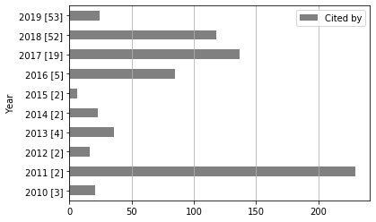
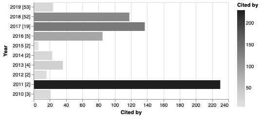
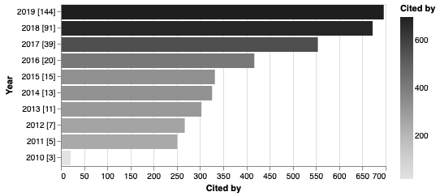

Citations by year¶
[1]:
import matplotlib.pyplot as plt
import pandas as pd
df = pd.read_json("data-05.json", orient="records", lines=True)
[2]:
from techminer import DataFrame, Plot
df = DataFrame(df)
[4]:
df.citations_by_year()
[4]:
| Year | Cited by | ID | |
|---|---|---|---|
| 0 | 2010 | 21 | [141, 142, 143] |
| 1 | 2011 | 230 | [139, 140] |
| 2 | 2012 | 16 | [137, 138] |
| 3 | 2013 | 36 | [133, 134, 135, 136] |
| 4 | 2014 | 23 | [131, 132] |
| 5 | 2015 | 6 | [129, 130] |
| 6 | 2016 | 85 | [124, 125, 126, 127, 128] |
| 7 | 2017 | 137 | [105, 106, 107, 108, 109, 110, 111, 112, 113, ... |
| 8 | 2018 | 118 | [53, 54, 55, 56, 57, 58, 59, 60, 61, 62, 63, 6... |
| 9 | 2019 | 24 | [0, 1, 2, 3, 4, 5, 6, 7, 8, 9, 10, 11, 12, 13,... |
[3]:
rdf.citations_by_year().barhplot()

[4]:
rdf.citations_by_year().barhplot("altair")
[4]:

[5]:
rdf.citations_by_year(cumulative=True).barhplot("altair")
[5]:

[6]:
rdf.documents_by_terms("Cited by")
[6]:
| Cited by | Num Documents | ID | |
|---|---|---|---|
| 0 | 1.0 | 21 | [[*6*], [*11*], [*17*], [*18*], [*19*], [*20*]... |
| 1 | 3.0 | 7 | [[*2*], [*4*], [*27*], [*68*], [*108*], [*120*... |
| 2 | 4.0 | 5 | [[*74*], [*76*], [*80*], [*87*], [*105*]] |
| 3 | 2.0 | 5 | [[*54*], [*83*], [*111*], [*133*], [*138*]] |
| 4 | 5.0 | 3 | [[*25*], [*130*], [*135*]] |
| 5 | 6.0 | 3 | [[*70*], [*81*], [*91*]] |
| 6 | 7.0 | 3 | [[*67*], [*109*], [*117*]] |
| 7 | 14.0 | 3 | [[*112*], [*116*], [*137*]] |
| 8 | 20.0 | 2 | [[*114*], [*132*]] |
| 9 | 9.0 | 2 | [[*107*], [*143*]] |
| 10 | 16.0 | 2 | [[*106*], [*113*]] |
| 11 | 19.0 | 2 | [[*127*], [*128*]] |
| 12 | 49.0 | 1 | [[*62*]] |
| 13 | 42.0 | 1 | [[*139*]] |
| 14 | 37.0 | 1 | [[*124*]] |
| 15 | 28.0 | 1 | [[*134*]] |
| 16 | 12.0 | 1 | [[*142*]] |
| 17 | 15.0 | 1 | [[*104*]] |
| 18 | 11.0 | 1 | [[*110*]] |
| 19 | 10.0 | 1 | [[*125*]] |
| 20 | 8.0 | 1 | [[*115*]] |
| 21 | 188.0 | 1 | [[*140*]] |
[7]:
rdf.documents_by_terms("Cited by").print_IDs()
1.0 (21) : [*6*][*11*][*17*][*18*][*19*][*20*][*23*][*24*][*47*][*50*][*78*][*88*][*92*][*96*][*100*][*102*][*118*][*119*][*122*][*129*][*136*]
3.0 (7) : [*2*][*4*][*27*][*68*][*108*][*120*][*131*]
4.0 (5) : [*74*][*76*][*80*][*87*][*105*]
2.0 (5) : [*54*][*83*][*111*][*133*][*138*]
5.0 (3) : [*25*][*130*][*135*]
6.0 (3) : [*70*][*81*][*91*]
7.0 (3) : [*67*][*109*][*117*]
14.0 (3) : [*112*][*116*][*137*]
20.0 (2) : [*114*][*132*]
9.0 (2) : [*107*][*143*]
16.0 (2) : [*106*][*113*]
19.0 (2) : [*127*][*128*]
49.0 (1) : [*62*]
42.0 (1) : [*139*]
37.0 (1) : [*124*]
28.0 (1) : [*134*]
12.0 (1) : [*142*]
15.0 (1) : [*104*]
11.0 (1) : [*110*]
10.0 (1) : [*125*]
8.0 (1) : [*115*]
188.0 (1) : [*140*]